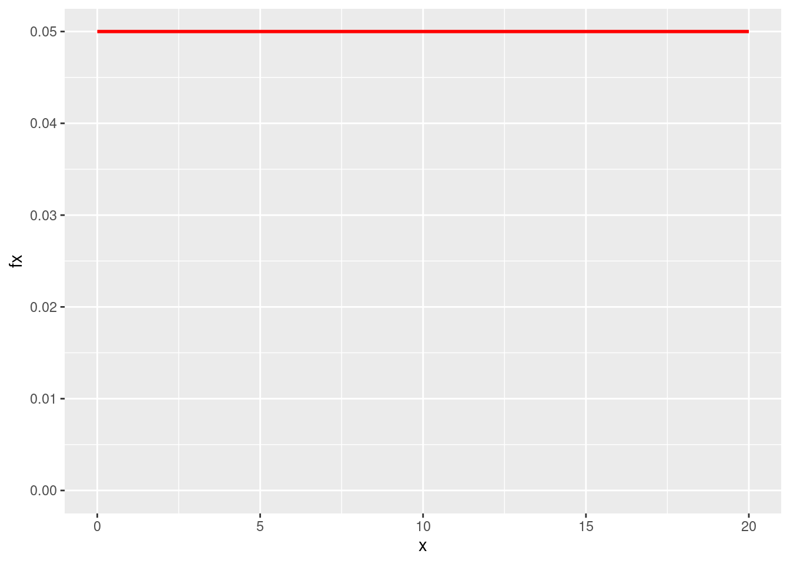
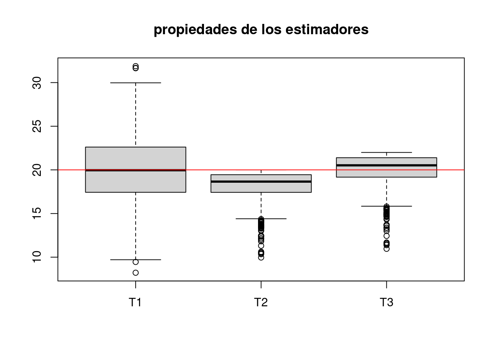
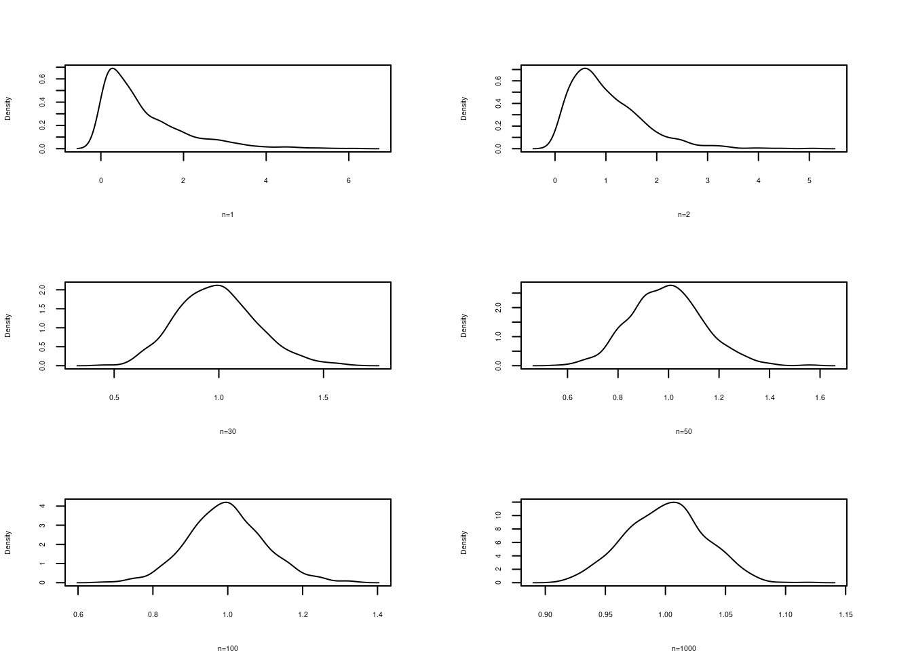
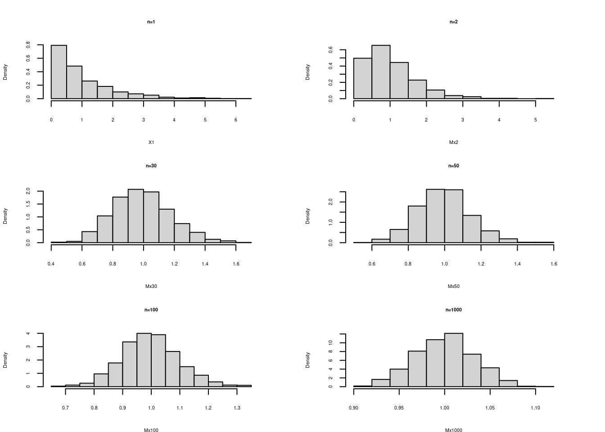
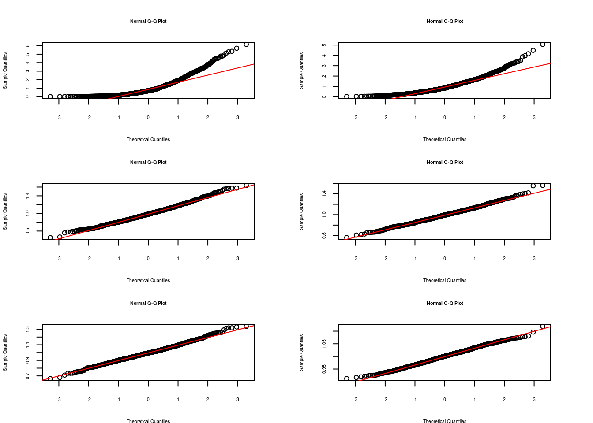

Para una variable con distribución uniforme \(unif(a=0, b=20)\) se desea determinar los siguientes estimadores del parámetro \(b\)
# uniforme
library(ggplot2)
x= c(0,20)
fx=c(1/20, 1/20)
dat=data.frame(x,fx)
ggplot(data=dat,aes(x=x, y=fx))+
scale_y_continuous(limits=c(0,.05))+
geom_line(size = 1,colour = 'red') 
\(\widehat{\theta_{1}} = 2 \bar{x}\)
\(\widehat{\theta_{2}} = \max\{x\}\)
\(\widehat{\theta_{3}} = \dfrac{(n+1)}{n} \max\{x\}\)
n=10
m=1000*n
Y=matrix(runif(m, min=0, max=20), ncol=n) # matriz de datos m x n
Mx=apply(Y,1,mean)
Max=apply(Y,1,max)
T1=2*Mx
T2=Max
T3=((n+1)/n)*T2
T123=data.frame(T1,T2,T3)
boxplot(T123, main="propiedades de los estimadores")
abline(h=20, col="red")
apply(T123,2,mean)## T1 T2 T3
## 20.01791 18.15563 19.97119Verificación del Teorema Central del Límite para una población exponencial con \(\lambda=1\)
Con este fin se siguen los siguientes pasos:
par(cex=0.5, cex.axis=.5, cex.lab=.5, cex.main=.5, cex.sub=.5, mfrow=c(3,2), mai = c(.5, .5, .5, .5))
# Teorema Central del Límite-----------------------------
# Paso 1
n=1000 # numero de columnas (tamaño máximo de muestra)
m=1000*n
# Caso --------------------------------------------------
# distribución exponencial-------------------------------
X=matrix(rexp(m,1),ncol=n)
# Paso 2
# generación de muestras-------------
X1=X[ ,1] # n=1
X2=X[ ,1:2] # n=2
X20=X[ ,1:20] # n=20
X30=X[ ,1:30] # n=30
X50=X[ ,1:50] # n=50
X100=X[ ,1:100] # n=100
X1000=X[ ,1:1000] # n=1000
# Paso 3
# generacion de medias---------------
Mx2=apply(X2,1,mean) # medias de muestras de tamaño n=2
Mx20=apply(X20,1,mean) # medias de muestras de tamaño n=20
Mx30=apply(X30,1,mean) # medias de muestras de tamaño n=30
Mx50=apply(X50,1,mean) # medias de muestras de tamaño n=50
Mx100=apply(X100,1,mean) # medias de muestras de tamaño n=100
Mx1000=apply(X1000,1,mean) # medias de muestras de tamaño n=1000
# Paso 4
# generación de densidad empírica --
d=density(X1)
d2=density(Mx2)
#d20=density(Mx20)
d30=density(Mx30)
d50=density(Mx50)
d100=density(Mx100)
d1000=density(Mx1000)
# Gráficos de densidad -------------------------------
# configuración de las gráficas
par(cex=0.5, cex.axis=.5, cex.lab=.5, cex.main=.5, cex.sub=.5, mfrow=c(3,2), mai = c(.5, .5, .5, .5))
# histogramas de comparacion-------------------------
plot(d, main=" ", xlab = "n=1")
plot(d2,main=" ", xlab = "n=2")
#plot(d20, main="", xlab = "n=20")
plot(d30, main=" ", xlab = "n=30")
plot(d50, main=" ", xlab = "n=50")
plot(d100, main=" ", xlab = "n=100")
plot(d1000,main=" ", xlab="n=1000")
# histogramas de comparacion--------------------------
hist(X1, main = "n=1", freq=FALSE)
hist(Mx2, main ="n=2", freq=FALSE)
# hist(Mx20, main = "n=20",freq=FALSE)
hist(Mx30, main = "n=30",freq=FALSE)
hist(Mx50, main = "n=50",freq=FALSE)
hist(Mx100, main = "n=100", freq=FALSE)
hist(Mx1000, main = "n=1000", freq = FALSE) 
# histogramas de comparacion--------------------------
qqnorm(X1) ; qqline(X1, col="red")
qqnorm(Mx2) ; qqline(Mx2, col="red")
# qqnorm(Mx20) ; qqline(Mx20, col="red")
qqnorm(Mx30) ; qqline(Mx30, col="red")
qqnorm(Mx50) ; qqline(Mx50, col="red")
qqnorm(Mx100) ; qqline(Mx100, col="red")
qqnorm(Mx1000) ; qqline(Mx1000, col="red")
Se puede observar la convergencia de la distribución de la media muestral a una distribución normal al aumentarse el tamaño de la muestra
A continuación se presentan las principales características de la media muestral \(\bar{x}\) y de la proporción muetral \(\widehat{p}\). En cada uno de los casos vamos a suponer el conocimiento de de una población pequeña.
Propiedades de la media muestral
Definir la población
Supongamos que una población esta conformada por los valores : \(\{1,2,3,4,5 \}\), donde \(N=5\)
Ahora que se desea calcular todas las medias que se puedan obtener de esta población para un tamaño de muestra \(n=2\). En otras palabras la población de medias para \(n=2\).
Inicialmente definimos dos funciones para calcular los parámetros poblacionales media y varianza:
\[\mu =\dfrac{1}{N} \sum_{i=1}^{N} x_{i}\]
\[\sigma^{2}= \dfrac{1}{N} \sum_{i=1}^{N} (x_{i}-\mu)^{2}\]
media=function(x){sum(x)/length(x)}
varianza=function(x){sum((x-media(x))^2)/(length(x))}Determinar la media y la varianza poblacional . La media y varianza poblacional de esta población estará dada por:
poblacion_x=c(1,2,3,4,5)
cat("media poblacional :",media(poblacion_x),"\n")## media poblacional : 3cat("varianza poblacional :",varianza(poblacion_x),"\n")## varianza poblacional : 2cat("\n")Se determinan todas las muestras que se pueden construir de la poblacion
Para determinar la media y la varianza de todas las medias muestrales para \(n=2\) que se pueden obtener de la población, suponemos que las muestras se escogen con repetición:
\((1,1), (1,2),(1,3),(1,4),(1,5),(2,1),(2,2),(2,3),.....,(5,5)\).
poblacion_n2=permutations(5,2,1:5, repeats=TRUE)
mx=apply(poblacion_n2, 1,mean)
data.frame(poblacion_n2,mx)## X1 X2 mx
## 1 1 1 1.0
## 2 1 2 1.5
## 3 1 3 2.0
## 4 1 4 2.5
## 5 1 5 3.0
## 6 2 1 1.5
## 7 2 2 2.0
## 8 2 3 2.5
## 9 2 4 3.0
## 10 2 5 3.5
## 11 3 1 2.0
## 12 3 2 2.5
## 13 3 3 3.0
## 14 3 4 3.5
## 15 3 5 4.0
## 16 4 1 2.5
## 17 4 2 3.0
## 18 4 3 3.5
## 19 4 4 4.0
## 20 4 5 4.5
## 21 5 1 3.0
## 22 5 2 3.5
## 23 5 3 4.0
## 24 5 4 4.5
## 25 5 5 5.0 cat("media poblacional de la media muestral :", media(mx),"\n")## media poblacional de la media muestral : 3 cat("varianza poblacional de la media muestral :",varianza(mx),"\n")## varianza poblacional de la media muestral : 1 cat("\n") cat("Compara los resultados obtenidos con los respectivos valores de la población ")## Compara los resultados obtenidos con los respectivos valores de la población plot(poblacion_n2, pch=19)
grid()Determinar la población de medias de tamaño \(n=2\), cuando el proceso se realiza sin repetición
En este caso desaparen las muestras \((1,1),(2,2),(3,3),(4,4),(5,5)\) ademas de \((2,1)\), pues ya esta contenida en la muestra \((1,2\). En total quedaran 10 posibles muestras
## X1 X2 mx
## 1 1 2 1.5
## 2 1 3 2.0
## 3 1 4 2.5
## 4 1 5 3.0
## 5 2 3 2.5
## 6 2 4 3.0
## 7 2 5 3.5
## 8 3 4 3.5
## 9 3 5 4.0
## 10 4 5 4.5## media poblacionalde la media muestral : 3## varianza poblacional de la media muestral : 0.75## Compara los resultados obtenidos con los respectivos valores de la población\(E[\bar{X}] = E[X] = \mu\)
\(V[\bar{X}] = \dfrac{V[X]}{n}\)
Cuando \(\dfrac{n}{N}>0.05\), como el muestreo se realiza sin repeticion ( un cliente solo parece una vez en la muestra) , la probabilidad de seleecion en cada momento cambia a medida que se elige la muestra. Estos cambios hacen necesario realizar un ajuste en la varianza:
\[V[\bar{X}] = \dfrac{V[X]}{n} \dfrac{(N-n)}{(N-1)}\]
Otro parametro de intres es la proporcion muestral para lo cual tambien se define una población pequeña que facilite la compresión de sus propiedades.
Propiedades de la proporción muesrtal
Definir la población
Supongamos que una población esta conformada por \(\{\)si, no,si, no, no \(\}\)
Ahora que se desea calcular todas las medias que se puedan obtener de esta población para un tamaño de muestra \(n=2\).
En otras palabras la población de medias para \(n=2\).
library(gtools)
media=function(x){sum(x)/length(x)}
varianza=function(x){sum((x-media(x))^2)/(length(x))}Determinar la media y la varianza poblacioneales
La media y varianza poblacional de esta población estará dada por:
poblacion_x=c(1,0,1,0,0)
cat("media poblacional :",media(poblacion_x),"\n")## media poblacional : 0.4cat("varianza poblacional :",varianza(poblacion_x),"\n")## varianza poblacional : 0.24cat("\n")Se determinan todas las muestras que se pueden construir de la población
Para determinar la media y la varianza de todas las medias muestral s para \(n=2\) que se pueden obtener de la población, suponemos que las muestras se escogen con repetición:
\((si,si)\), \((si,no)\)……\((no,no)\)
x <- c("1-si", "2-no", "3-si","4-no","5-no")
muestra=permutations(n=5,r=2,v=x,repeats.allowed=T)
p=c(1,0.5,1,0.5,0.5,0.5,0,0.5,0,0,1,0.5,1,0.5,0.5,0.5,0,0.5,0,0,0.5,0,0.5,0,0)
data.frame(muestra,p)## X1 X2 p
## 1 1-si 1-si 1.0
## 2 1-si 2-no 0.5
## 3 1-si 3-si 1.0
## 4 1-si 4-no 0.5
## 5 1-si 5-no 0.5
## 6 2-no 1-si 0.5
## 7 2-no 2-no 0.0
## 8 2-no 3-si 0.5
## 9 2-no 4-no 0.0
## 10 2-no 5-no 0.0
## 11 3-si 1-si 1.0
## 12 3-si 2-no 0.5
## 13 3-si 3-si 1.0
## 14 3-si 4-no 0.5
## 15 3-si 5-no 0.5
## 16 4-no 1-si 0.5
## 17 4-no 2-no 0.0
## 18 4-no 3-si 0.5
## 19 4-no 4-no 0.0
## 20 4-no 5-no 0.0
## 21 5-no 1-si 0.5
## 22 5-no 2-no 0.0
## 23 5-no 3-si 0.5
## 24 5-no 4-no 0.0
## 25 5-no 5-no 0.0cat("media de la proporcion muestral : ",media(p), "\n")## media de la proporcion muestral : 0.4cat("varianza de la proporcion muestral : ", varianza(p))## varianza de la proporcion muestral : 0.12Determinar la población de medias de tamaño \(n=2\), cuando el proceso se realiza sin repetición
En este caso desaparen las muestras \((1,1),(2,2),(3,3),(4,4),(5,5)\) ademas de \((2,1)\), pues ya esta contenida en la muestra \((1,2\). En total quedaran 10 posibles muestras
## X1 X2 mp
## 1 1-si 2-no 0.5
## 2 1-si 3-si 1.0
## 3 1-si 4-no 0.5
## 4 1-si 5-no 0.5
## 5 2-no 3-si 0.5
## 6 2-no 4-no 0.0
## 7 2-no 5-no 0.0
## 8 3-si 4-no 0.5
## 9 3-si 5-no 0.5
## 10 4-no 5-no 0.0## media poblacional de la media muestral : 0.4## varianza poblacional de la media muestral : 0.09## Compara los resultados obtenidos con los respectivos valores de la poblacion\(E[\widehat{p}] = p\)
\(V[\widehat{p}] = \dfrac{pq}{n}\)
Si \(\dfrac{n}{N}>0.05\), se hacen necesario realizar un ajuste en la varianza:
\[V[\widehat{p}] = \dfrac{pq}{n} \dfrac{(N-n)}{(N-1)}\]
Para seleccionar una muestra de una variables, supongamos que se distinguen por un Id del 1 al 1000, utilizamos la funcion sample para seleccionar la muestra:
x<-seq(1,1000,1)
sample(x, 20)## [1] 205 171 16 422 613 835 768 596 809 627 37 666 905 256 604 610 83 969 420
## [20] 224En este caso se ha seleccionado una muestra de tamaño \(n=10\) de una población de \(N=1000\) unidades. Dato que la población es muy grande es poco probable que un valor salga repetido, por lo que se conoce como muestreo sin repetición.
Es posible realizar un muestreo con repetición en el caso de que la población sea demasiado pequeña (este tipo de muestreos se llaman bootstrap o remuestreo) :
x<-1:10
sample(x, 20, replace = TRUE)## [1] 3 9 8 3 6 3 7 1 1 1 3 9 1 2 5 7 9 10 10 2N=2000
a=100
ids=S.SY(N, a)
ids## [,1]
## [1,] 36
## [2,] 136
## [3,] 236
## [4,] 336
## [5,] 436
## [6,] 536
## [7,] 636
## [8,] 736
## [9,] 836
## [10,] 936
## [11,] 1036
## [12,] 1136
## [13,] 1236
## [14,] 1336
## [15,] 1436
## [16,] 1536
## [17,] 1636
## [18,] 1736
## [19,] 1836
## [20,] 1936# se importa base de datos
library(readr)
base_muestreo <- read_delim("data/base_muestreo.csv",
delim = ";", escape_double = FALSE, col_types = cols(ID = col_integer()),
trim_ws = TRUE)
head(base_muestreo) # primeras 6 filas de la base## # A tibble: 6 × 3
## ID CAR NF
## <int> <chr> <dbl>
## 1 1 CIV 3
## 2 2 BIO 2.7
## 3 3 ELE 3.5
## 4 4 ELE 4.3
## 5 5 ELE 4.2
## 6 6 ELE 4dim(base_muestreo) # dimension de la base## [1] 180 3Para seleccionar una muestra aleatoria mediante el muestreo aleatorio simple de la base utilizamos la función sample
# se extre la muestra
muestra1=base_muestreo[sample(1:nrow(base_muestreo),50,replace=F),] Ahora si se requiere un muestreo sistemático
N=180
n=10
a=N/n
ids=S.SY(N, a)
ids## [,1]
## [1,] 1
## [2,] 19
## [3,] 37
## [4,] 55
## [5,] 73
## [6,] 91
## [7,] 109
## [8,] 127
## [9,] 145
## [10,] 163base2=base_muestreo[ids,]
base2## # A tibble: 10 × 3
## ID CAR NF
## <int> <chr> <dbl>
## 1 1 CIV 3
## 2 19 IND 2.4
## 3 37 MAT 3.9
## 4 55 CIV 3.7
## 5 73 MAT 4.8
## 6 91 IND 4.5
## 7 109 IND 4.1
## 8 127 CIV 2.5
## 9 145 CIV 3.1
## 10 163 MAT 3.8Para los casos de los muestreos estratificado y muestreo por conglomerados se utiliza el muestreo aleatorio simple como base.